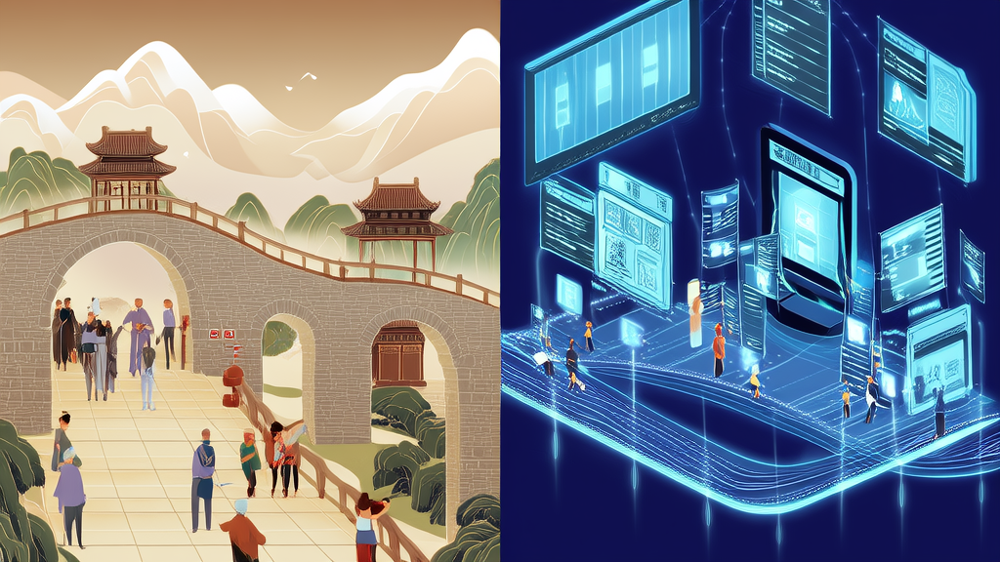
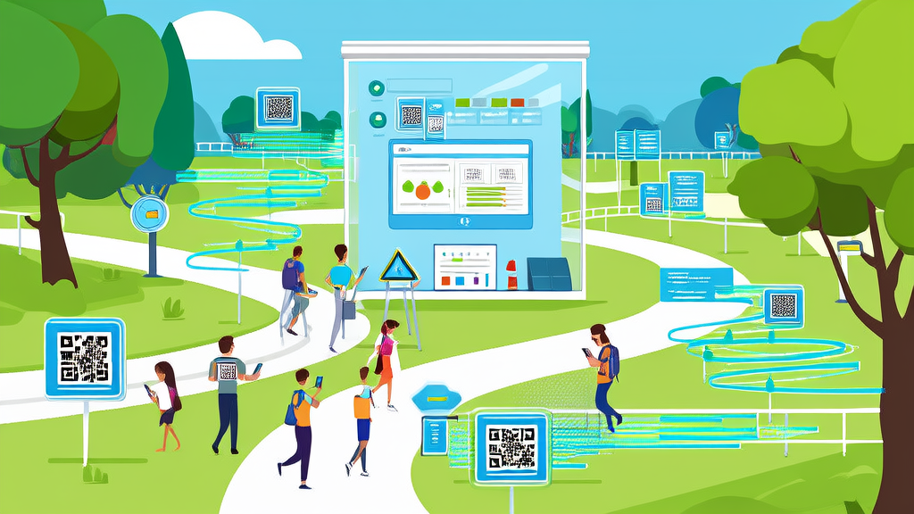

讯业信息智慧景区扫码打卡小程序，提升游客互动与品牌传播
河南讯业信息科技有限公司（以下简称“讯业信息”）为文旅行业智慧景区打造了一套基于微信小程序与PC管理后台的扫码打卡拍照解决方案。游客通过微信扫描二维码即可完成照片抓拍与打卡，并生成专属海报分享至社交平台，有效提升了景区的数字化互动体验。该方案同时赋予景区统一的打卡点位管理与运营数据统计能力，增强了游客的分享意愿，扩大了品牌曝光，是文旅数字化建设的一次成功实践。
- 方案采用微信小程序+PC管理后台双端联动架构 双端系统
- 游客端包含5个核心功能模块 5个功能模块
- 管理端提供2大管理工具 2个管理工具
- 部署无需改造摄像头硬件，仅需二维码立牌 零硬件改造
- 景区通过后台实时获取打卡数据与点位热度 实时数据统计
智慧景区扫码打卡小程序：提升游客互动与品牌传播
摘要
河南讯业信息科技有限公司（以下简称“讯业信息”）为文旅行业智慧景区打造了一套基于微信小程序与PC管理后台的扫码打卡拍照解决方案。游客通过微信扫描二维码即可完成照片抓拍与打卡，并生成专属海报分享至社交平台，有效提升了景区的数字化互动体验。该方案同时赋予景区统一的打卡点位管理与运营数据统计能力，增强了游客的分享意愿，扩大了品牌曝光，是文旅数字化建设的一次成功实践。
行业背景与挑战

近年来，文旅行业的数字化转型进程持续加速，智慧景区建设已从“选择题”转变为“必答题”。游客不再满足于简单的观光游览，而是期待获得更具沉浸感、互动性和可分享性的游玩体验。与此同时，传统景区的打卡方式仍然以人工拍照、实体印章等单一形式为主，缺乏与数字工具的联动。这种模式既难以留存和沉淀游客数据，也无法为景区运营提供有效抓手，难以适应当下新媒体环境中的传播节奏与游客需求。
客户痛点
在项目启动之初，景区方面面临以下四个层面的实际问题：
- 打卡方式单一，互动体验薄弱。 游客在景区的打卡行为缺乏数字化载体，游玩过程中的趣味性和记忆点不足，难以形成二次到访或口碑推荐。
- 照片获取不便，分享动力缺失。 游客在游览过程中难以获得高质量的个人照片，尤其是抓拍类影像，导致主动分享和传播的意愿偏低。
- 点位管理分散，数据支撑缺位。 景区内多个打卡点位缺乏统一管理平台，照片素材归集困难，各点位热度、游客行为等关键数据无法量化，运营决策缺乏依据。
- 品牌传播受限，口碑裂变困难。 由于缺乏便捷的分享工具，游客自发的社交传播难以形成规模，景区品牌曝光更多依赖外部投放，成本高且效果难以追踪。
解决方案

针对上述痛点，讯业信息为景区量身定制了一套“微信小程序 + PC管理后台”双端联动的智慧景区扫码打卡解决方案。该方案以轻量化部署为原则，在不改造景区现有摄像头硬件的前提下，仅需在打卡点位配置二维码立牌即可完成系统落地。
在游客端，微信小程序集成了以下核心功能模块：
- 微信一键登录： 游客扫码后无需注册，微信授权即可快速进入打卡流程，降低了使用门槛。
- 扫码取图打卡： 游客扫描打卡桩上的二维码，系统自动联动摄像头抓拍照片，并同步完成打卡记录，整个过程流畅高效。
- 个人打卡相册： 所有打卡照片自动归集至个人相册，游客可随时查看、下载，解决了照片获取难的长期痛点。
- 打卡海报生成： 系统自动将游客照片与景区品牌视觉元素合成专属海报，一键保存并分享至朋友圈或社交平台，助力景区实现低成本口碑传播。
- 景区地图与点位展示： 小程序内置景区地图，清晰标注各打卡点位位置，引导游客游览动线，提升整体游玩体验。
在管理端，PC后台为景区运营人员提供了全面的管理工具：
- 打卡点位管理： 支持对多个打卡点位进行灵活的新增、编辑和下线操作，并可独立配置每个点位关联的照片素材，适配景区不同区域的宣传需求。
- 照片素材管理： 运营人员可统一维护各点位的背景模板与品牌物料，确保游客生成的海报风格统一、品牌曝光准确。
讯业信息在产品设计中充分考虑了系统的可扩展性和易用性，确保景区一线运营人员无需专业技术背景即可快速上手，独立完成日常运营维护。
实施效果
该方案上线后，景区的游客互动方式和运营管理效率均发生了显著变化。
- 游客参与度与照片获取体验提升： 扫码打卡的操作路径极短，游客即扫即拍即取，打卡参与率和照片获取便捷度显著提升。高质量的抓拍照片和品牌海报激发了游客的分享意愿，游客自发分享至社交平台的行为明显增多，为景区带来了可观的自然流量。
- 数据能力从无到有： 景区通过管理后台获得了全域打卡数据的统计能力，可实时查看各点位的打卡热度与游客参与情况。这些数据为景区评估点位吸引力、优化游览线路、合理配置服务资源提供了客观依据，运营决策从经验驱动转向数据驱动。
客户评价与价值总结
该智慧景区项目不仅是景区数字化运营的工具升级，更是景区私域流量入口的搭建。通过扫码打卡这一高频互动场景，景区成功沉淀了游客行为数据与品牌口碑，为后续精准运营和二次触达提供了基础。对于整个文旅行业而言，讯业信息提供的这一解决方案证明了数字化手段重构游客体验的可行性——以轻量化的技术投入，实现游客体验、品牌传播与运营效率的多重提升，为同类景区提供了可复制的智慧景区建设范例。
常见问题
Q：游客如何扫码打卡？
A：游客使用微信扫描打卡桩上的二维码，授权一键登录后，系统自动联动摄像头抓拍照片并完成打卡，全程无需人工干预。
Q：景区需要添置专用硬件吗？
A：无需改造或添置专用拍摄设备。方案利用景区现有摄像头资源，只需制作并部署二维码立牌即可上线，部署成本低、周期短。
Q：景区如何管理多个打卡点位？
A：通过PC管理后台，运营人员可对全部点位进行新增、编辑和下线操作，并可独立为每个点位关联对应的照片素材与品牌模板，管理灵活高效。
Q：游客的照片隐私如何保障？
A：每位游客仅可查看和下载本人的打卡相册。分享时生成的是定制海报，由游客自主决定是否传播，兼顾了个人隐私保护与社交分享需求。
Q：该方案对景区数据运营有何具体帮助？
A：后台提供游客打卡数据、点位热度等维度的统计功能，景区可据此分析各点位受欢迎程度，优化游览路线与资源配置，使运营决策有据可依。
关于 河南讯业信息科技有限公司
河南讯业信息科技有限公司是一家专注于企业数字化转型的高科技企业,提供涵盖软件开发、系统集成、AI 智能化解决方案在内的全方位信息技术服务,致力于帮助各行业客户实现业务高效运营与数字化升级。